Gott och blandat
vad
Diverse mindre designprojekt
när
2023-2025
målgrupp
Ej specificerat
Några personliga favoriter bland de strögrejer jag designat de senaste åren. Gemensamt för dessa är att de kommit till när jag har experimenterat och testat nya tekniker, färger och typsnitt.
Nedan skapelser är huvudsakligen gjorda i Illustrator, men för vissa har jag även använt Photoshop.

 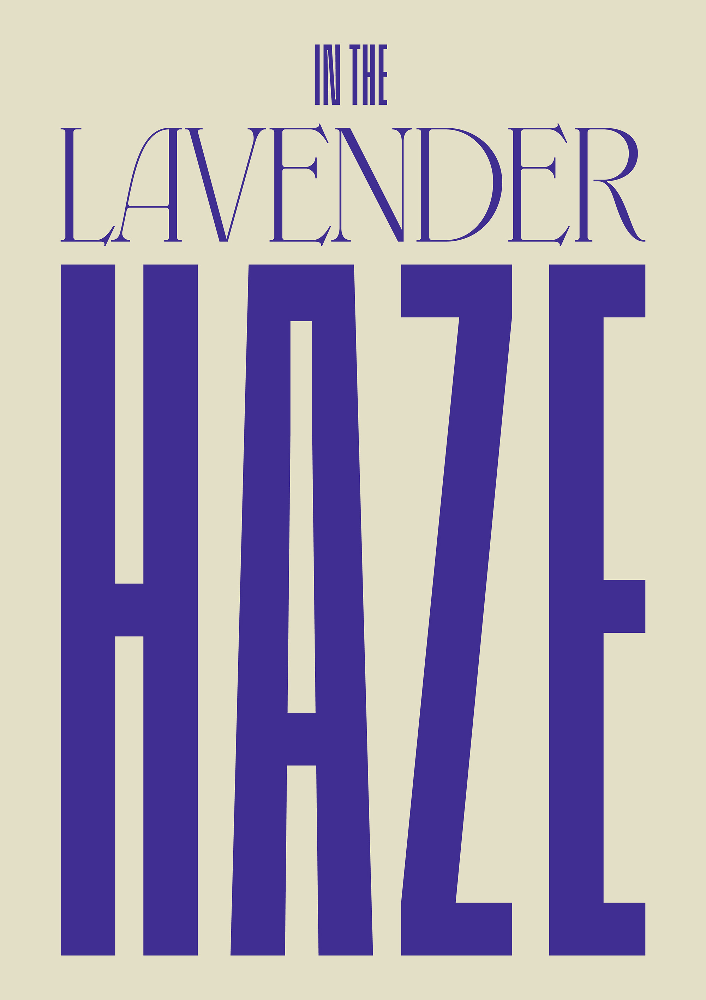
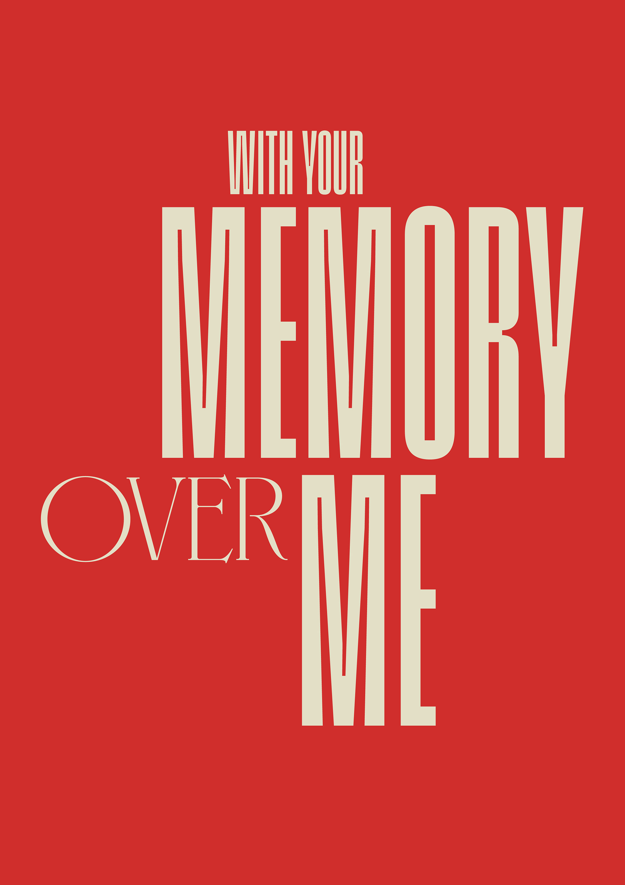
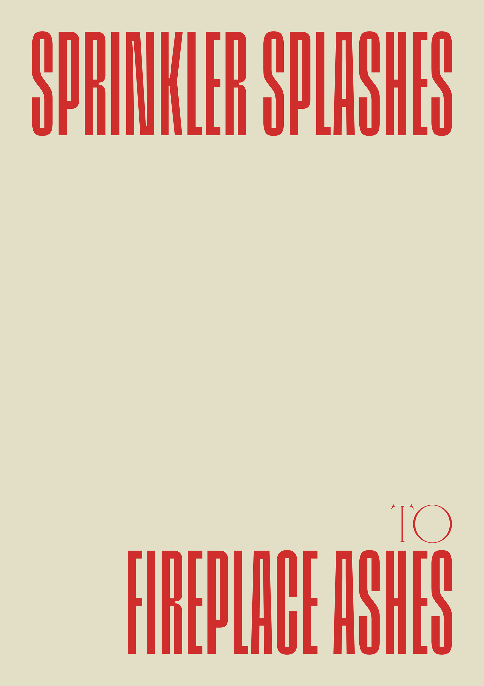
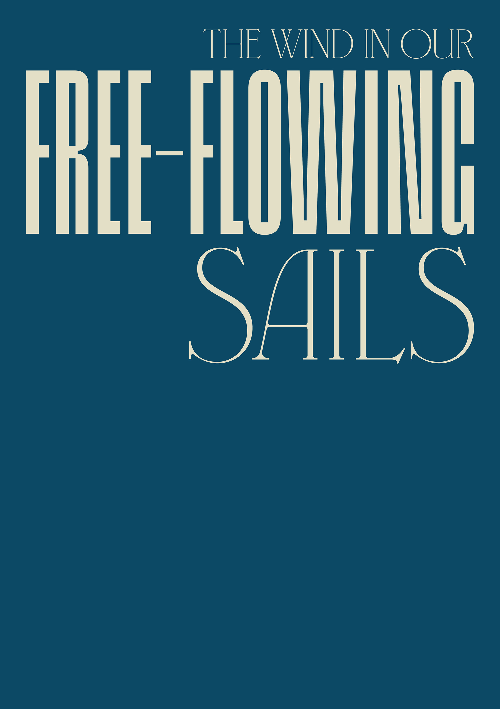
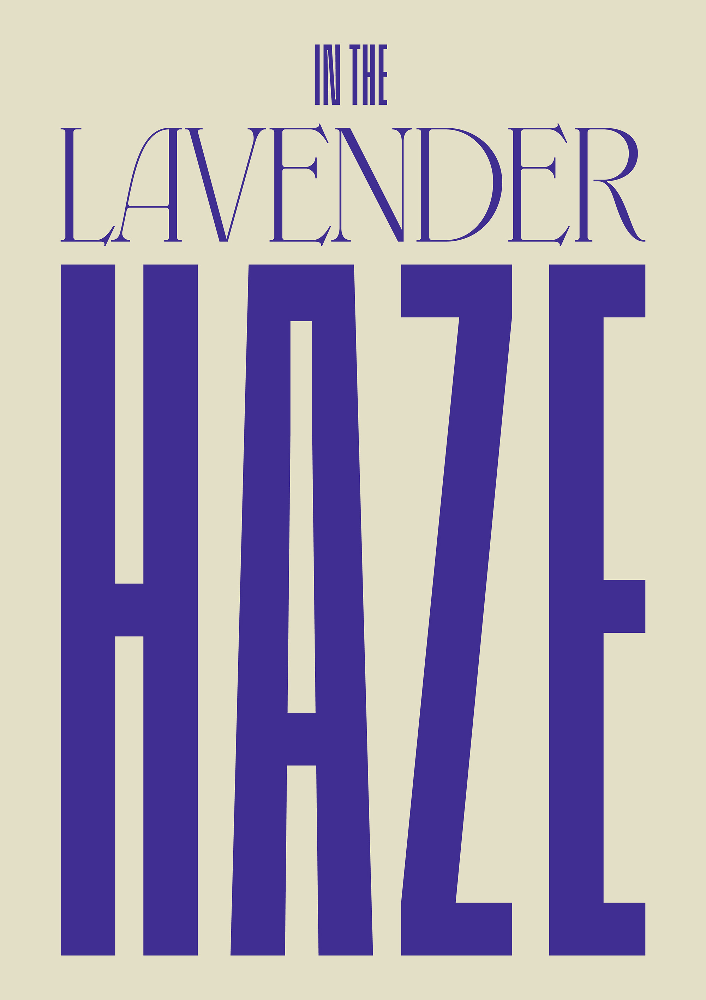
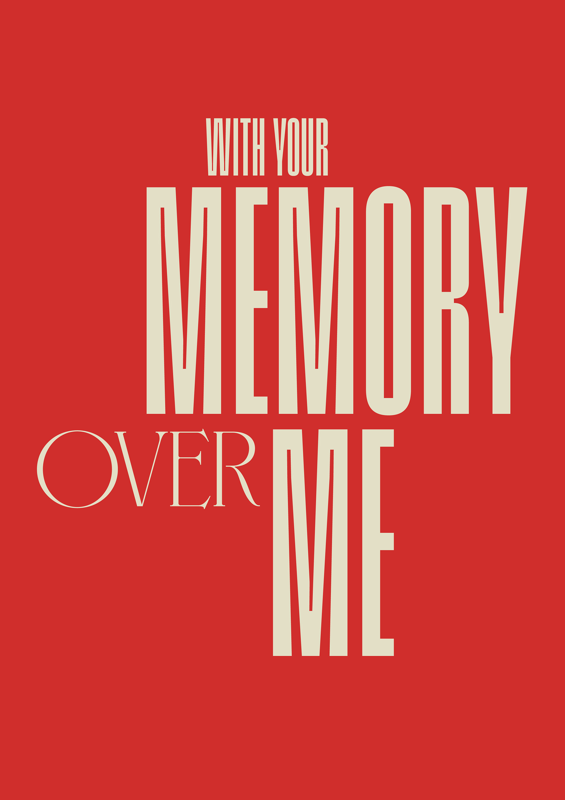
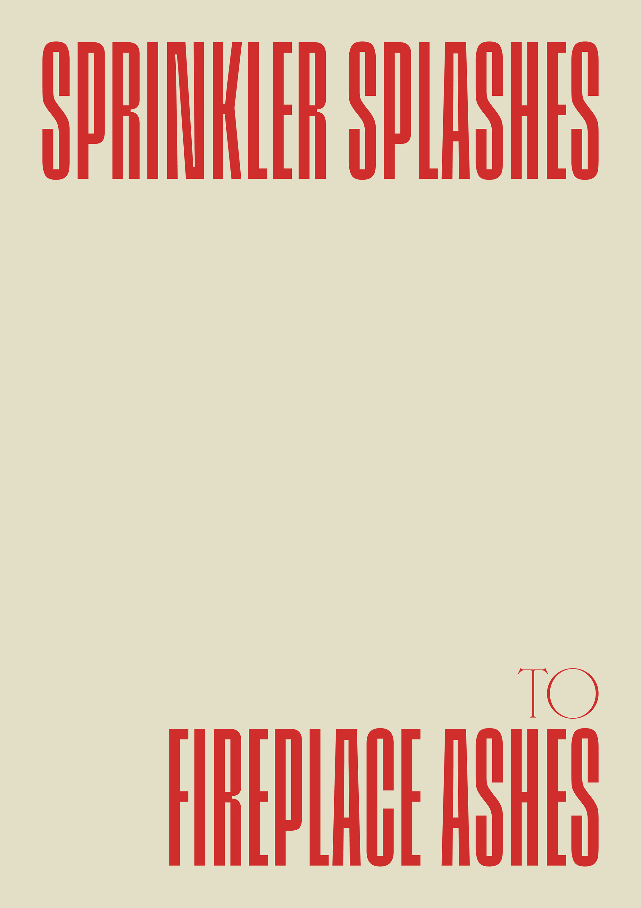
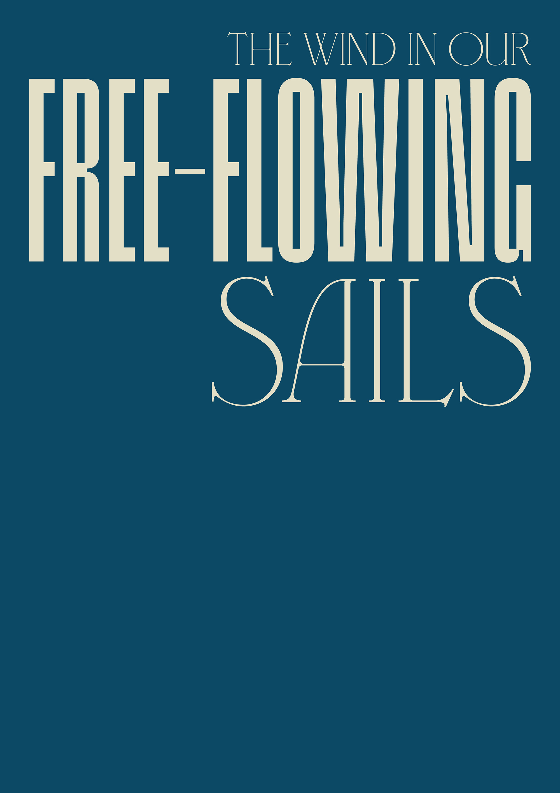
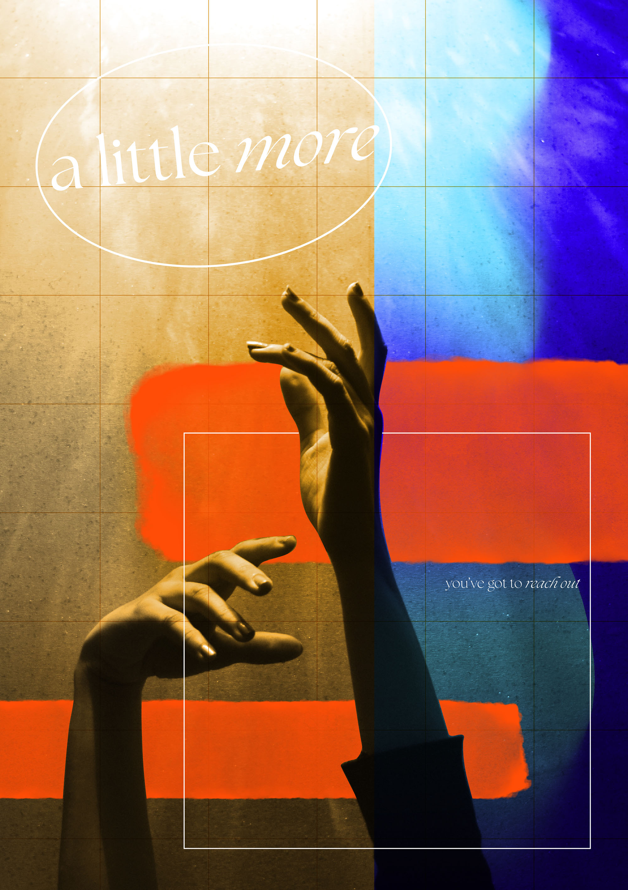


 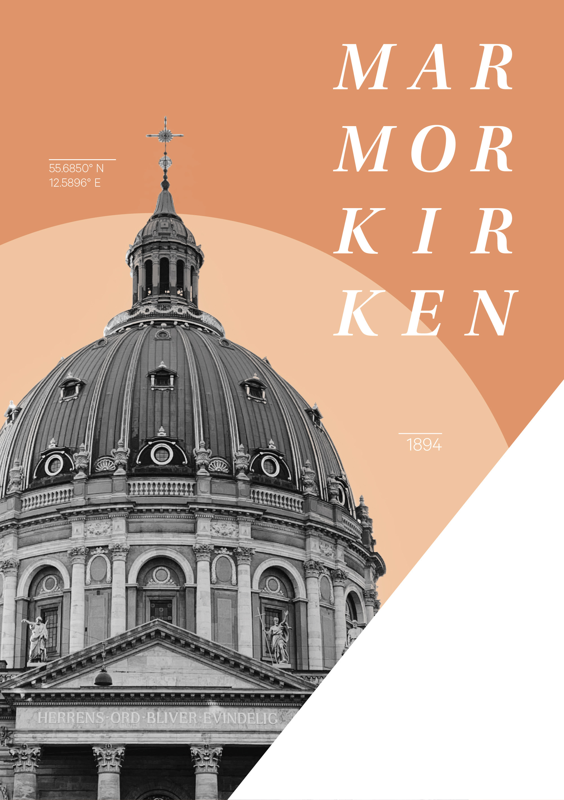
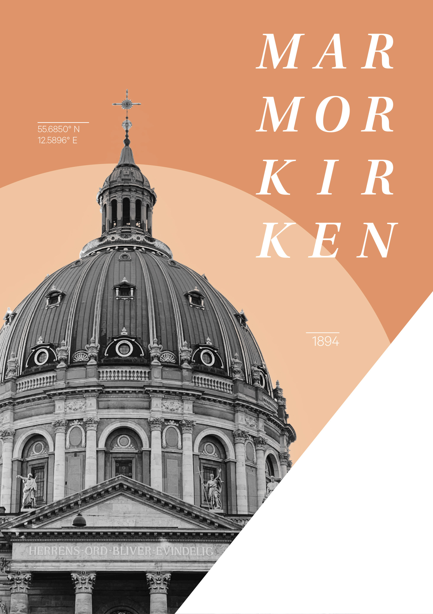

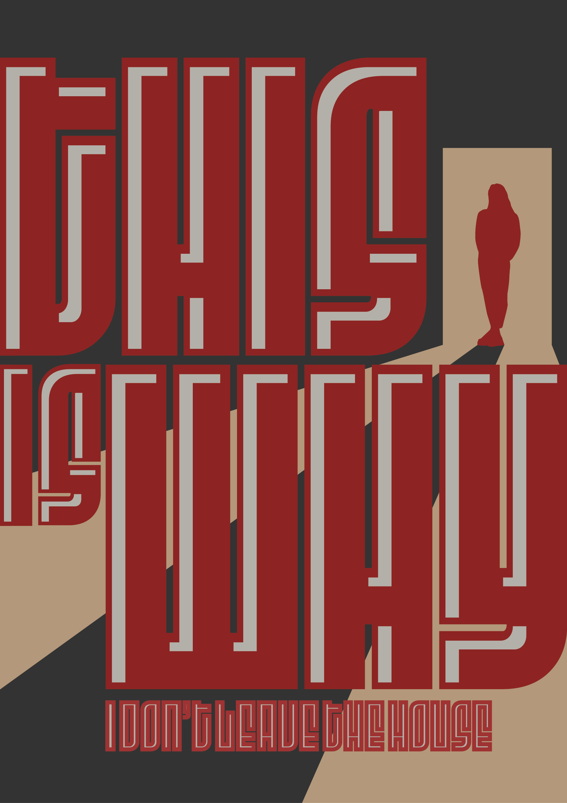